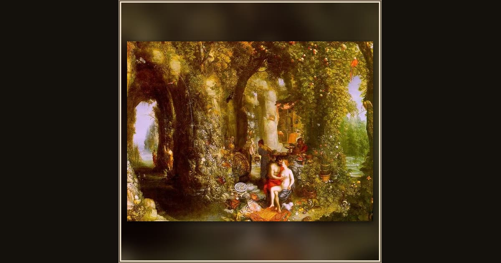

Odysseus and Calypso
Jan Brueghel the Elder · c. 1616 · Wikimedia Commons
This flower-choked grotto with its bright parrot and heaped platters is Calypso's cave - the faraway island where Proteus tells Menelaus that Odysseus is held, weeping for home with no ship to leave (Od. 4.555-560). Jan Brueghel the Elder packs in all the lush